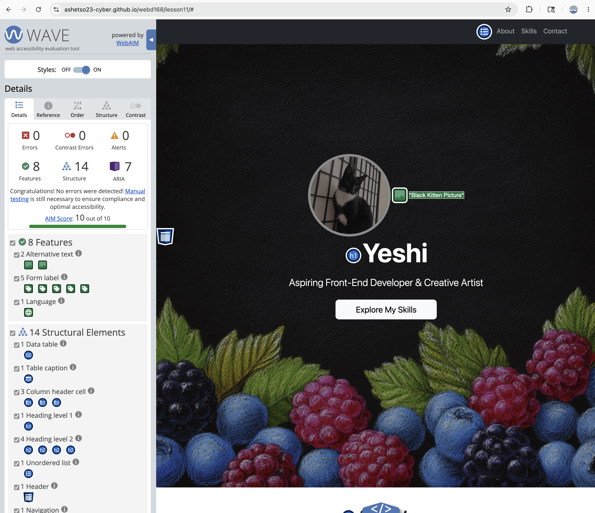
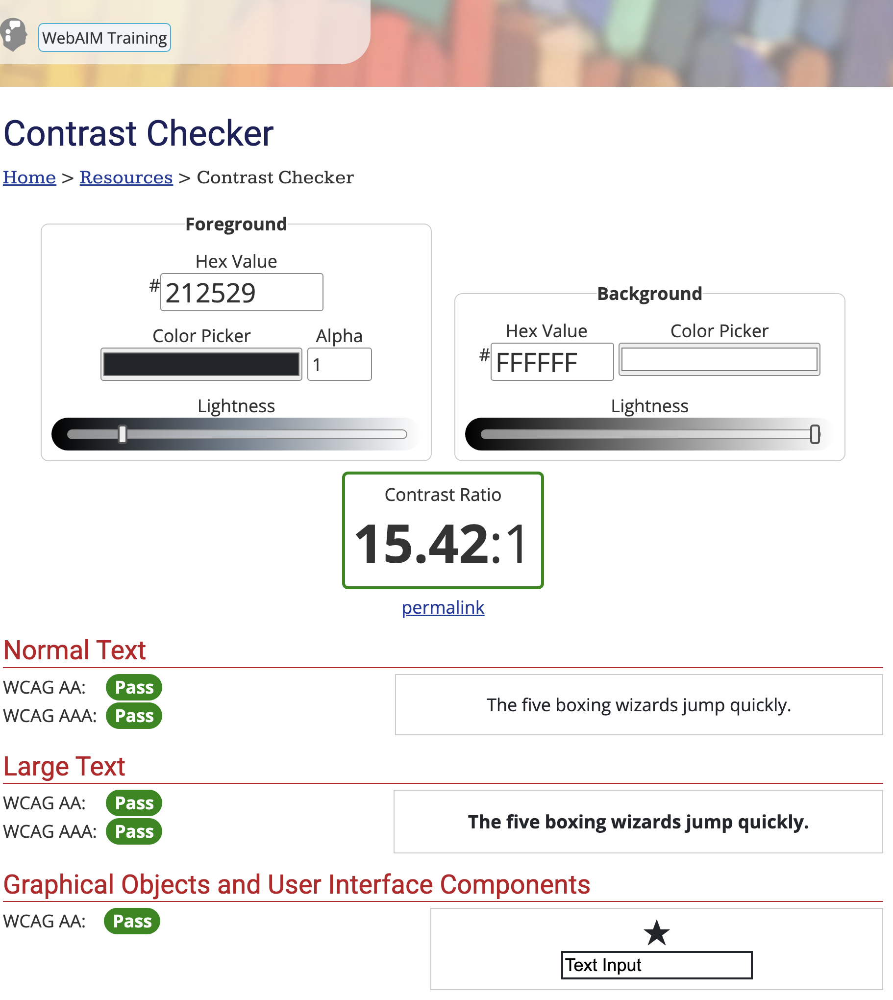
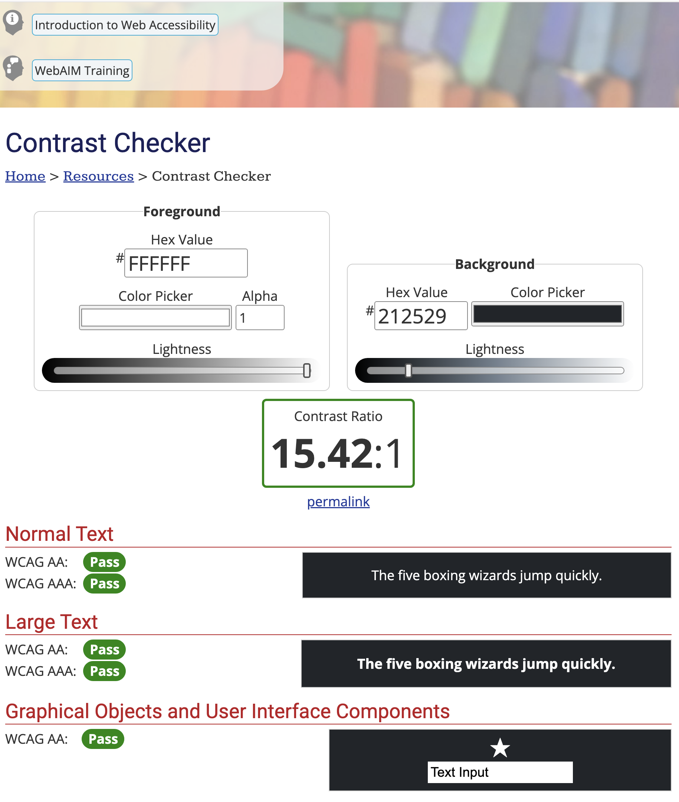

I tested my portfolio using the WAVE tool and fixed several issues including missing form labels and empty links by adding proper labels and aria-labels. I also checked color contrast with WebAIM. Most combinations passed well. These small changes made my website more accessible for everyone. Final WAVE score: 10/10.